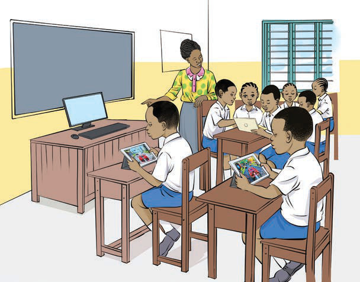

(c) Study the following pictures. Then, answer the questions that follow in the spoken form.
Picture 1

Picture 2
Questions
1. What do you think is the teacher doing in Picture 1?
2. What do you think are the pupils doing in Picture 1 and 2?
3. What can you do with those devices in Pictures 1 and 2?
4. Why is it essential for you to use such devices at home and school?